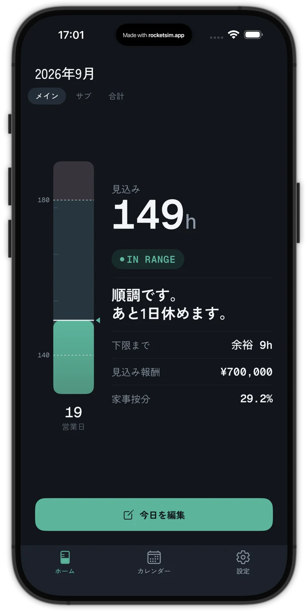
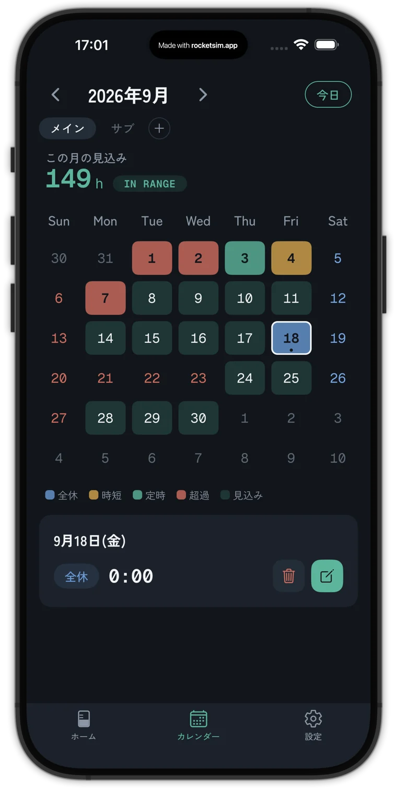
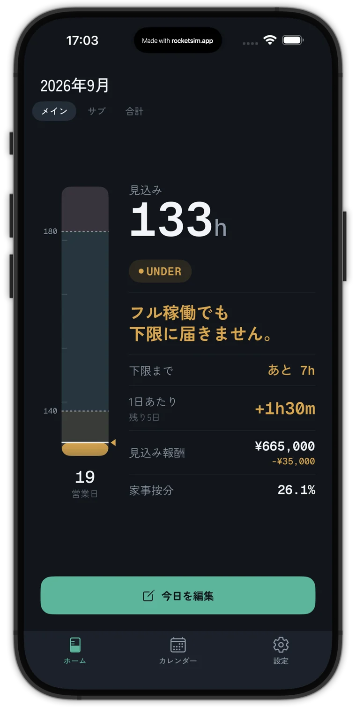

配ったアプリが、起動直後に落ちた。
本体に組み込むライブラリの不具合を、パッチ（差分ファイル）で直しています。そのパッチに、自分の Mac でビルドしたときの生成物が混ざりました。手元にはその生成物があるので動きますが、配布用のビルドサーバー（EAS）ではパッチを当てられず、直っていないライブラリのまま作られ、TestFlight で起動直後に落ちました。
13KB本来の修正
14ファイル
14ファイル
1.4MB生成物が混ざったパッチ・478ファイル
SESエンジニアのための稼働管理アプリ Bander。月の稼働が精算幅（下限〜上限）のどこに着地するかを見込み、あと何日休めるかを答えます。
順調です。 あと1日休めます。
下限140h・上限180h、9月は19営業日で残り8日という例の値です。判定と文言はアプリと同じにしています。
AIハッカソン 説明資料
精算幅の契約では、月の稼働が下限を割ると報酬が控除され、上限を超えると超過分が精算されます。月末になれば実績は分かりますが、月の途中で「このまま行くと何時間になるか」は勤怠表からは読み取りにくい。Bander はそれを見込みで出します。



帯の可視化は無料です。¥1,000 の買い切り（Bander Pro）で、見込み報酬と控除額、複数現場の合算、家事按分の年間集計が使えます。
作り方
個人開発です。先に仕様を文書にしておき、それを Claude Code に渡して実装させました。仕様が文書になっていると、AIが書いたコードが仕様と合っているかを、人とAIの両方で確かめられます。
要求・機能設計・用語集を docs/ に書く。
機能ごとの設計とタスクを .steering/ に書く。
完了条件を先に決め、満たすまで実装させる。
大きい画面と iPhone SE で確かめ、気になった点を言葉で戻す。
AIの利用箇所
どの工程でも、AIが作ったものを採用するかどうかの判断と、実機での確認は人が行いました。
きっかけ
開発中に、この種類の事故が2回起きました。どちらもスマホアプリ特有の仕組みで起きたので、先にその仕組みを説明します。
画面と計算。開発中は Metro（Web の Vite に当たる開発サーバー）が配り、保存すると約1秒で反映されます。
通知や保存などを担う外部ライブラリを組み込んだ iOS アプリ。変えたら数分かけてビルドし直します。
OTA（Over The Air）更新は、App Store でアプリを更新してもらわなくても、アプリを開いたときに裏で新しい中身（JavaScript）を受け取り、次に開いたときから新しい中身で動く仕組みです。Web ページを直すと、ブラウザを入れ直さなくても次に開いたときに新しいページになるのと同じです。
文言の修正や計算のバグなら、OTA ですぐに直せます。ただし本体（ネイティブ）の変更は届けられません。
OTA で困るのは、本体が古いまま中身だけ新しくなるときです。本体にまだ無いライブラリを呼んで落ちます。Web で言えば、まだ無い API を呼んでしまう状態です。そこで本体と中身の両方に番号を刻み、一致する本体にだけ届けます。
Bander は、本体に効くファイル（ネイティブのライブラリ・設定・パッチ）のハッシュを runtimeVersion にしています。本体に効く変更があれば値が必ず変わるので、番号を上げ忘れません。図中の値は例です。
本体に組み込むライブラリの不具合を、パッチ（差分ファイル）で直しています。そのパッチに、自分の Mac でビルドしたときの生成物が混ざりました。手元にはその生成物があるので動きますが、配布用のビルドサーバー（EAS）ではパッチを当てられず、直っていないライブラリのまま作られ、TestFlight で起動直後に落ちました。
開発中のアプリも、起動のたびに Metro から runtimeVersion を受け取って照合します。Metro はそれを毎回、約1.2GB 分のライブラリのハッシュ計算から求めていて、アプリが待つ約10秒に間に合いませんでした。
撮影中だけ番号を固定すれば1〜3秒で返ります。ただし戻し忘れると、本体に効く変更をしても番号が変わらず、古い本体に合わない中身を配ってしまいます。回避策そのものが、次の事故の種になります。
品質管理
個人開発では、確認する人が自分しかいません。そこで「確認」を3つに分けました。毎回同じ答えになる判定はスクリプト、原因の説明と観点に沿ったレビューはAI、採否と見た目の判断は人が受け持ちます。
パッチ・runtimeVersion・eas.json・課金キー・Lint・型・テスト。AIを使わないので、数秒で終わり、毎回同じ結果になる。
scripts/checks/ ・ GitHub ActionsNGの原因と直し方を説明する。PRごとに、決めた観点で差分を読んで指摘する。指摘は自分でも裏を取る。
サブエージェント3つ ・ PRレビュー何を自動化するか、指摘を採るか、画面の見た目がよいか。機械に任せられない判断だけが残る。
PR のマージ ・ 実機での確認コードが利用者に届くまでの道のりに、確認を順に置いています。どれも手元で同じコマンドを打てば再現できます。
パッチの生成物、runtimeVersion の固定、eas.json、変更したファイルの Lint。コミットに含まれるファイルだけを見るので数秒。
スクリプト上の確認に加えて、実際に npm ci でパッチを当て、型チェックとテスト226件を流す。
スクリプトGitHub Actions の Claude が、CLAUDE.md に書いた7つの観点で差分を読み、PR にコメントする。指摘がなくても、見た観点を要約して残す。
AIビルドサーバー上でパッチを当て直し、runtimeVersion と課金キーの有無を確かめる。落ちればビルドが止まる。
スクリプトnpm run ota:update 経由でしか配らない。runtimeVersion を固定したままなら配信を止める。
スクリプトDependabot が更新の PR を出し、CI と同じ確認を通す。npm audit の結果は「アプリに入るもの」と「開発用の道具」に仕分けて残す。
スクリプト実装する Claude Code と、PR をレビューする Claude は、同じ CLAUDE.md を読みます。書く側と見る側が同じ基準を持つようにしています。
$ 事故当時のファイルで各確認を実行 [NG] パッチ 1.4MB・478 ファイル（本来は 13KB） [NG] eas.json のコメントキー・プレースホルダ・environment 抜け [NG] runtimeVersion が固定のまま → 原因と直し方は patch-guard / metro-runtime-guard が説明
新しい確認は、事故当時のファイルで実際に NG になることを確かめてから採用しています。
何を自動化するか
感覚で確認を増やすと、重くなるだけで効きません。AIに全コミットから修正（fix / revert）を拾わせて分類し、機械的に防げたものだけを自動にしました。
棚卸しは docs/failure-taxonomy.md に記録し、修正が積み上がったら同じ手順でやり直します。
どれも人が確かめてから直しました。レビューするAI自身も裏取りをしていて、誤っていた指摘は取り下げています。あわせて、.env や署名鍵は AI が読めないよう設定で止めています。
技術スタック
データは端末の SQLite に保存します。稼働の計算は入出力を持たない関数にまとめ、テストで確かめています。